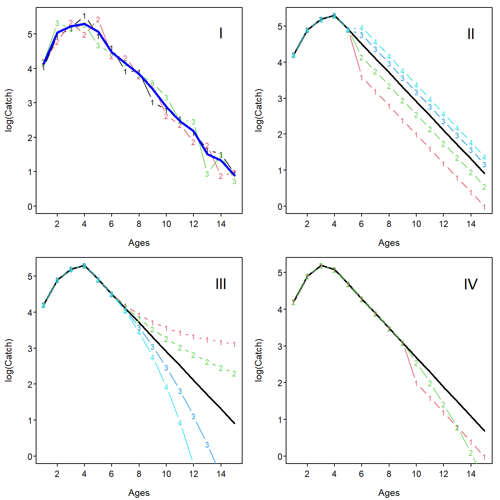

As with any model, the analysis of catch curves for estimating instantaneous total mortality rate depends on a series of assumptions being met. The regression method using longitudinal and cross-sectional data share the following assumptions:
The longitudinal method has the following additional assumption,
Additionally, if cross-sectional data is being used then it is assumed that there is constant recruitment, i.e., the initial number of individuals is the same for each cohort of fish.
Violations of these assumptions often lead to catch curves that are “bumpy,” convex, concave, or offset rather than linear in the right descending limb Figure 1.

Figure 1: Simulated catch curves to illustrate shapes when assumptions are violated. Each simulation (i.e., plot), unless otherwise, noted uses \(N_{0}=1000\) for each year-class, \(Z=0.40\), and incomplete recruitment until age-4 and then constant recruitment for subsequent ages. In simulation I, a coefficient of variation for \(N_{0}\) of 0.3 was used. In simulation II, constant multipliers of change in recruitment of 0.4, 0.7, 1.3, and 1.6 were applied at age-6. In simulation III, geometric multipliers of \(Z\) by age of 0.8, 0.9, 1.1, and 1.2 were applied at age-6. In simulation IV, the vulnerability of age-10 and older fish was cut in half (in run 1) and decreased by 0.1 for each age (in run 2). In each plot, the catch curve with no assumption violations is shown as a solid black line. In simulation I, the average of the three runs is shown as a solid blue line.